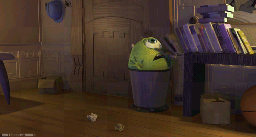
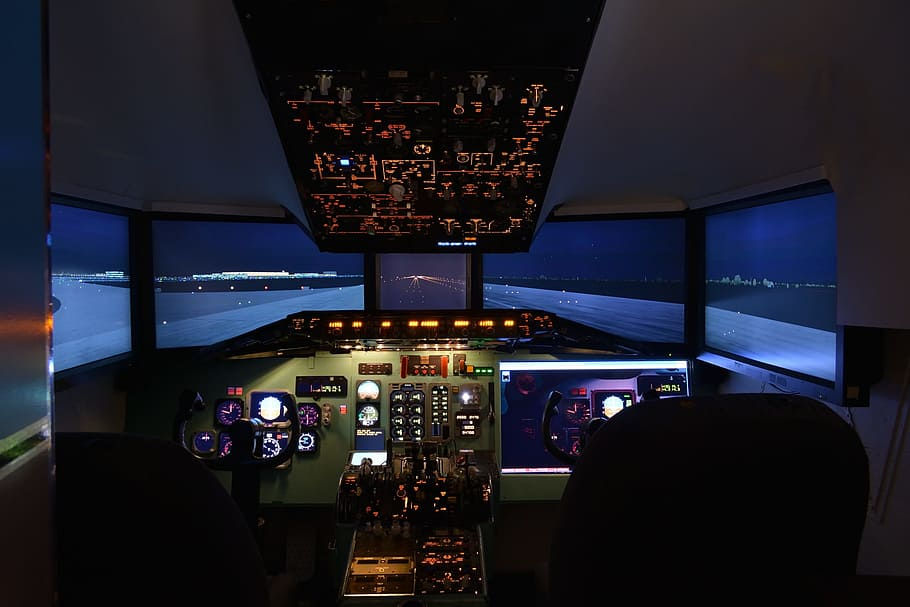

| Animacija ima vse pomembnejšo vlogo v razredu s prihodom računalnikov in kot dopolnilni učni pristop spodbuja zanimanje učencev za učenje. Tehnologija se v 21. stoletju hitro razvija in ta razvoj prinaša številne novosti tudi na področju izobraževanja. Uporaba tehnologije v izobraževanju vpliva tudi na učenje in poučevanje. Predlog, da bi se z uporabo animacije v izobraževanju bistveno povečal odnos učencev do šole in učni uspeh učencev na pozitiven način se je izkazal, kot resničen. Pokazalo se je, da animacija kot tehnološko orodje, ki se uporablja v izobraževanju, veliko prispeva k varnosti učencev, pospeševanje in upočasnjevanje časa, preučevanje zelo redkih dogodkov, poenostavljanja zapletenih sistemov, uporabna in poceni ter motivira in zagotavlja izboljšanje učnih dosežkov pri predmetih. Potrebna so orodja, ki bi omogočila, da bi bile informacije na voljo velikim množicam hitro in učinkovito. Animacijske vsebine v razredu lahko uporabimo z različnimi tehnikami, npr.: |
|
RAZLAGALNA ANIMACIJA |
|
| Razlagalna vsebina animacije se običajno nanaša na uporabo animiranega videoposnetka. Uporabniki uporabljajo določeno programsko opremo za izdelavo svojih risanih videoposnetkov, ki ponazarjajo določeno temo v razredu. Na voljo je veliko razlagalnih animacij, ki temeljijo na učnih gradivih za posredovanje zapletenih tem v razredu. V grobem, uporaba animacij pri pouku ni sama po sebi bolj učinkovita od tradicionalnih statičnih grafik. Ključno je, kako prikazati posebne značilnosti posameznih animacij ali kako organizirati učno vsebino v učni uri. Za nekatere učence animirani videoposnetek lahko presega meje njihovih zmožnosti učenja. Ustavitev videoposnetka in dodajanje pisanja ali razlage v pisni obliki ali osebne razlage, lahko to težavo zaobidemo. Če lahko učenci nadzorujejo hitrost videoposnetka, lahko to prav tako pomaga, da bodo imeli od tega posnetka kar največjo korist. Animacije olajšajo razumevanje abstraktnih pojmov in zagotavljajo, da je učenje je trajno. Smiselno učenje olajša shranjevanje informacij in priklic iz spomina. Uporaba digitalne tehnologije v izobraževanju olajša učenje posameznikov s posebnimi potrebami in ima pozitivne učinke na uspešnost učencev in pridobivanje različnih spretnosti, kot so branje, pisanje in matematične spretnosti. |  |
| monsters inc © 2022 by no12345678910111213 is licensed under CC BY-SA 4.0 | |
3D SIMULACIJA |
|
| V izobraževanju nove medijske tehnologije in oblike zagotavljajo več možnosti in priložnosti za izboljšanje produktivnosti učenja. Najnovejše tehnologije je preprosto vključiti v tehnike animacije likov v realnem času, 3D vizualizacij in 3D simulacij v druge oblike poučevanja gradiva, s čimer se ustvari novo močno poglobljeno okolje, s katerim lahko učenci pridobivajo znanje in razvijajo višje ravni mišljenja. Ker pa so povezane 3D orodja za izdelavo so zapletena in od uporabnikov zahtevajo strokovno usposabljanje in uporaba tehnik 3D animacije v običajnih učnih dejavnostih še vedno ostaja izziv. Na podlagi interaktivnih animacijskih tehnik in učinkovitega oblikovanja zvoka se lahko zasnuje pripovedi. Take tehnike motivirajo učence. 3D animacijske vsebine naj bi ponujale nove perspektive, ki poskušajo učence približati resničnim življenjskim izkušnjam. V vsaki od teh virtualnih sob se učencu prikaže prizor z različnimi predmeti, s katerimi lahko komunicira v skladu z zakoni fizike. |  |
| simulacija_letenja is marked with CC0 1.0 |